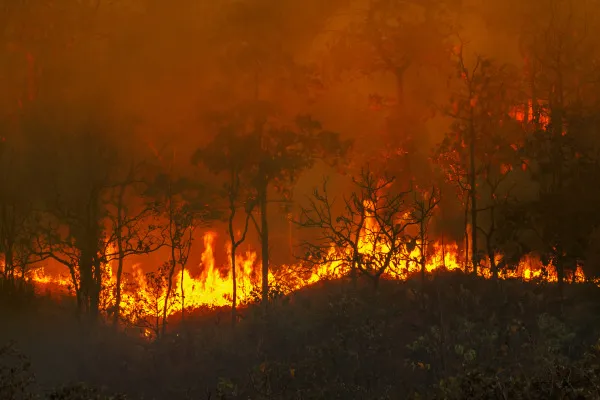

Detecção Rápida
Identificar focos de incêndio em segundos, antes que se espalhem pela vegetação.
Prevenção inteligente de queimadas com satélites, sensores IoT e inteligência artificial.
Detectamos incêndios antes que se espalhem, protegendo vidas e o meio ambiente.
Monitoramento
Detecção
Áreas cobertas
As queimadas causam destruição ambiental, prejuízos econômicos e impactam diretamente a saude da população.

● Situação Crítica no BrasilMilhões de hectares de florestas destruídos por queimadas descontroladas todo ano.
Agricultura, pecuária e infraestrutura sofrem perdas bilionárias anuais.
Fumaça e poluição causam graves problemas resporatórios em comunidades.
Sistemas tradicionais demoram para detectar focos, permitindo propagação.
Combinamos sensores IoT, microcontroladores e software inteligente para detecção precisa e veloz.
Microcontrolador central para coleta de dados dos sensores IoT.
Detecta fumaça e gases combustíveis em tempo real.
Monitora temperatura e umidade com alta precisão.
Exibe leituras locais e status de alerta.
Backend em Python com interface HTML, CSS e JavaScript.
Dados climáticos e de satélite integrados ao sistema.
Nosso foco é criar um sistema acessível, rápido e confiável para proteção ambiental em larga escala.
Identificar focos de incêndio em segundos, antes que se espalhem pela vegetação.
Acionar alertas automáticos para equipes de combate e comunidades próximas.
Processar dados climáticos e ambientais para prever riscos com antecedência.
Monitorar áreas remotas e de difícil acesso via satélites e sensores locais.
Nossa solução atende desde órgãos governamentais até comunidades locais. Clique em cada grupo para entender melhor.
Defesa civil, bombeiros e secretarias de meio ambiente.
Produtores rurais que dependem da terra para sobreviver.
Organizações focadas em preservação e reflorestamento.
Populações que vivem próximas a áreas de risco.
Brigadistas e bombeiros que atuam no front do combate.
Cientistas e universidades que estudam mudanças climáticas.
hectares queimados no Brasil em 2024
dos incêndios têm origem humana
tempo de detecção com o OrbitalFire AI
mais rápido que sistemas tradicionais
Tecnologia acessível que gera impacto real na proteção de vidas e do meio ambiente.
Alertas em tempo real reduzem drasticamente o tempo de reação das equipes.
Menos área destruída significa mais biodiversidade e florestas protegidas.
Redução de fumaça e poluição para comunidades próximas a áreas de risco.
Menos prejuízo econômico para agricultores, pecuaristas e o país.
Sistema funciona continuamente, dia e noite, em qualquer condição climática.
Satélites cobrem áreas imensas que seriam impossíveis de monitorar manualmente.
Do satélite ao alerta: um fluxo contínuo e automático de proteção para áreas de risco.
 ● Dashboard ao vivo — 0 alertas ativos
● Dashboard ao vivo — 0 alertas ativos
Satélites analisam áreas de risco e detectam focos de calor continuamente.
Sensores IoT medem temperatura, umidade e fumaça no local em tempo real.
O sistema cruza dados e identifica riscos antes que o fogo se espalhe.
Alertas enviados automaticamente às equipes e exibidos no dashboard.
Tudo o que você precisa saber sobre o OrbitalFire AI.
Utilizamos satélites, sensores IoT e inteligência artificial para identificar padrões de calor e fumaça em tempo real.
O sistema cobre desde áreas rurais até regiões remotas com baixa infraestrutura, usando dados orbitais e sensores locais.
Os sensores podem operar offline, mas a sincronização e alertas em tempo real requerem conexão com a internet.
Os alertas são enviados automaticamente via dashboard, notificações e integrações com sistemas de emergência.
Sim, parte da solução é open-source para incentivar colaboração e evolução contínua da tecnologia.
O OrbitalFire AI está sendo desenvolvido para ser a solução acessível que o Brasil precisa no combate às queimadas. Junte-se a nós nessa missão.